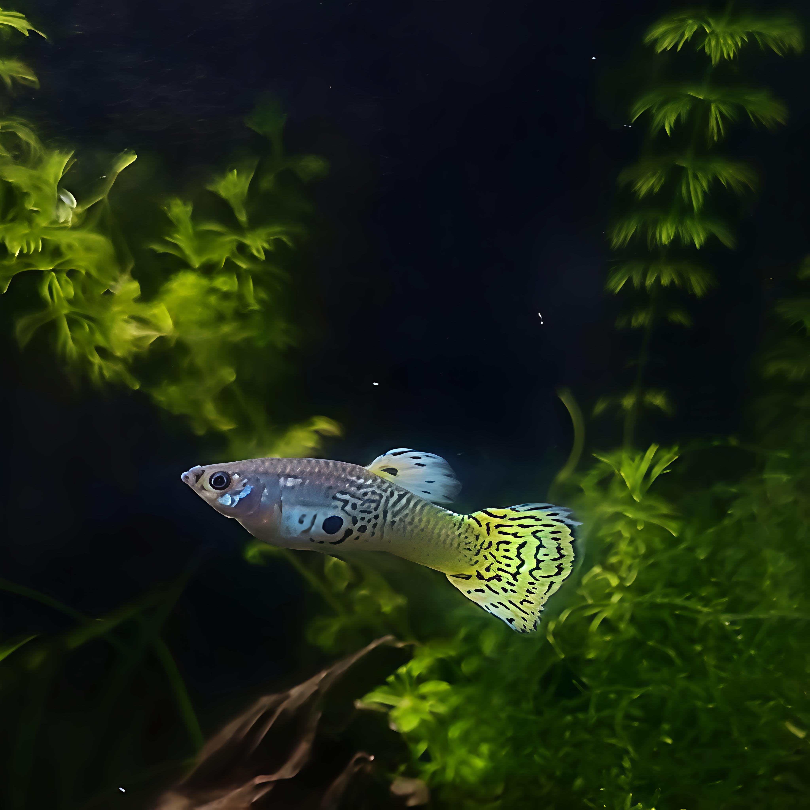

Green Cobra Guppy
Breeding - Available Soon
Green Cobra Guppies are colourful freshwater livebearers known for their intricate cobra-style body patterning, active swimming behaviour and striking finnage.
Their bright appearance and energetic nature make them a popular choice for well-maintained community aquariums with compatible tank mates.
Save this fish to your wishlist so it is easy to find once stock becomes available.
Colourful, active and social
A classic livebearer with eye-catching patterning and constant activity.
Green Cobra Guppies are selectively bred forms of Poecilia reticulata, recognised for their intricate cobra-style patterning and bright green or metallic tones.
They are active swimmers that spend much of their time exploring the middle and upper areas of the aquarium.
Guppies are social fish and are best kept in groups rather than as solitary individuals.
Males can display frequently, while mixed groups may breed readily, so stocking ratios and population growth should be considered before purchase.
Stable water and consistent maintenance
Open swimming space with cover
Provide a fully cycled aquarium with stable water conditions and gentle to moderate filtration.
Live plants are highly beneficial and provide cover, resting areas and additional security.
Leave enough open swimming space for natural activity, while still providing planted or structured areas where fish can retreat.
A secure lid is recommended, as active livebearers can occasionally jump.
A varied omnivorous diet
Feed a good-quality tropical flake, micro pellet or suitably sized granule as the main diet.
Smaller foods are generally easier for guppies to eat comfortably.
Frozen or other suitable prepared aquarium foods can be offered as part of a varied feeding routine.
Feed sensible portions and avoid allowing uneaten food to accumulate in the aquarium.
Well suited to peaceful communities
Green Cobra Guppies generally suit peaceful community aquariums with other non-aggressive species that prefer similar water conditions.
Avoid housing them with highly aggressive fish or species likely to nip long fins.
When keeping males and females together, expect breeding and plan ahead for fry and increasing population.
Tank size, stocking level and individual temperament should always be considered when selecting companions.
Responsible livestock first
AquaCoding Studios aims to provide healthy livestock alongside clear, practical care information so customers can make informed stocking decisions.
If you are unsure whether Green Cobra Guppies are suitable for your aquarium, contact us before purchasing and we will help you assess your setup and compatibility.